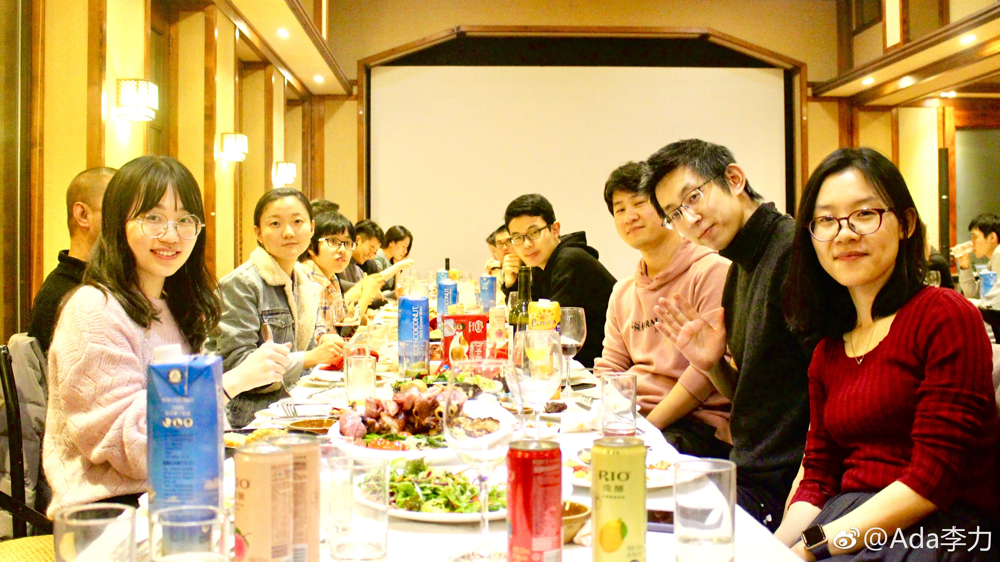

周五我又犯了迷糊的毛病，没仔细看通知，直接驱车70公里赶往晚上入驻的酒店，而距离下午开始的年会+晚会地点，距离30公里，完美错过这天的活动。
晒下晚宴大家合照。小伙伴们群里一阵自我吹捧：对于IT公司来说，文因的俊男靓女还是挺多的嘛。
公司同事间互相夸赞，比如泡温泉时，文敏惊呼：“刘成，你身材好好呀”，那时大家都已泡很久，所以看不出刘成通红的脸是害羞还是泡的。
也不单是同事之间夸，欧阳老公通过照片鉴定，刘成很帅。
我为什么记录这个事情呢，因为我对帅这个事情没有认知，大家这么一夸，滑雪时我才很注意地看了看，确实很帅。
好了，大家找找照片里哪个是刘成。
晒下晚宴大家合照。小伙伴们群里一阵自我吹捧：对于IT公司来说，文因的俊男靓女还是挺多的嘛。
公司同事间互相夸赞，比如泡温泉时，文敏惊呼：“刘成，你身材好好呀”，那时大家都已泡很久，所以看不出刘成通红的脸是害羞还是泡的。
也不单是同事之间夸，欧阳老公通过照片鉴定，刘成很帅。
我为什么记录这个事情呢，因为我对帅这个事情没有认知，大家这么一夸，滑雪时我才很注意地看了看，确实很帅。
好了，大家找找照片里哪个是刘成。

- 